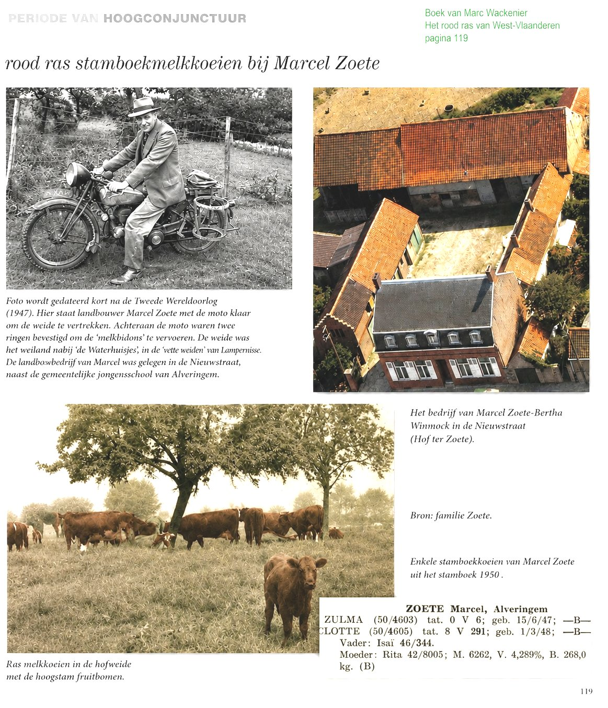

Gedurende meer dan een eeuw pasten fokkers van het Rood Ras van West-Vlaanderen, zonder het zo te benoemen, de basisprincipes van de genetica toe. Door systematisch enkel de beste stieren en koeien met gewenste eigenschappen – meer melk, betere vleesaanzet, een rustig karakter of een mooie bil – met elkaar te laten voortplanten, veranderde geleidelijk de genetische samenstelling van de populatie. Deze kunstmatige selectie was de eerste vorm van doelgerichte genetische sturing: men wijzigde niet rechtstreeks de genen maar beïnvloedde wel welke genen aan volgende generaties werden doorgegeven.
De moderne genetische technieken, zoals embryotransplantatie, IVF, genomische selectie en uiteindelijk genbewerking, bouwen voort op hetzelfde principe: gewenste erfelijke eigenschappen sneller en nauwkeuriger doorgeven.
Het fundamentele verschil is dat de klassieke fokkerij werkte via selectie over vele generaties terwijl de hedendaagse genetica het erfelijk materiaal rechtstreeks kan analyseren, selecteren en in sommige gevallen zelfs aanpassen. Zo vormt de traditionele rasveredeling de historische voorloper van de moderne genetische manipulatie.
